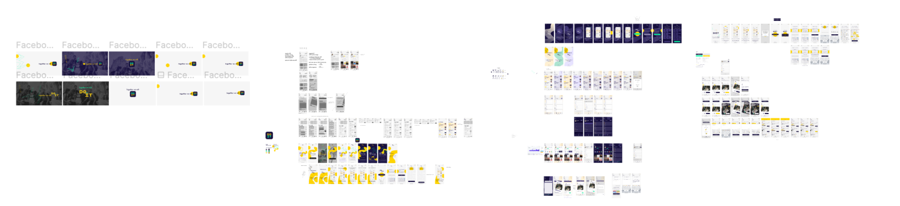
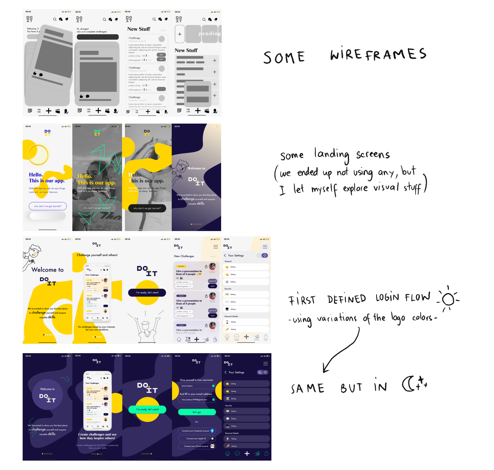
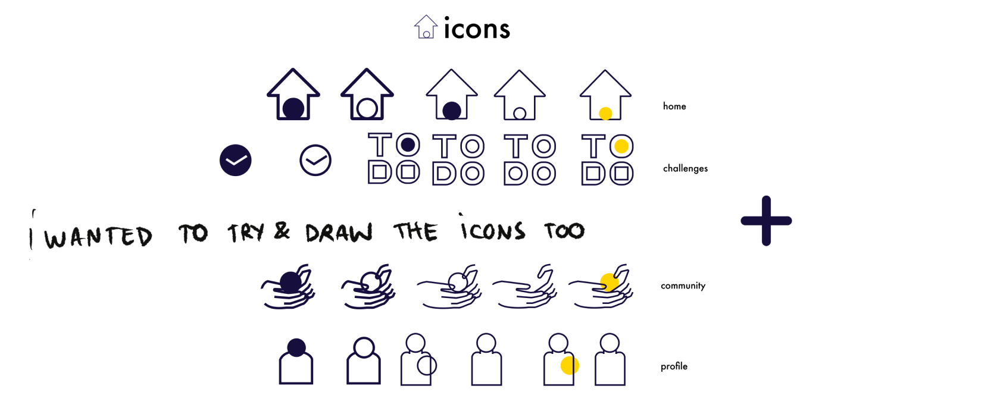
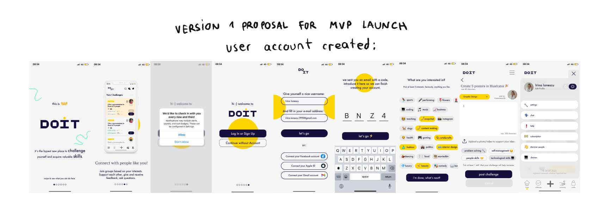
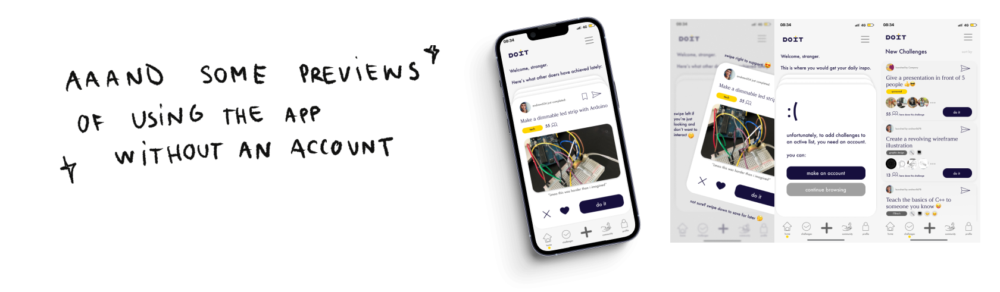

“The client: DOIT is a startup based in bucharest that aims to create a platform where users can expand their
skills and improve their life through completing and creating challenges. The concept competed and won 4th place
in the start-up incubator Future Makers Romania, along 22 more international teams.
My contribution: First proposals for visual design and directions for the app, coming up with wireframes based
on the pre-existent research, applying styles to wireframes and tackling some parts of the social media visual
identity.”



